Correlations (R,Python)
Course Overview
Red means that the page does not exist yet
Orange means that the page is started
Please make sure you’ve read about variance within the dispersion section before proceeding with this page.
Correlations capture how much two variables are associated with each other by calculating the proportion of the total variance explained by how much the two variables vary together (explained below). To understand this, we need to think about how each variable varies independently, together and compare the two. We’ll use the gapminder data to look at how how life expectancy correlated with GDP in 2007:
library(gapminder)
library(ggplot2)
# create a new data frame that only focuses on data from 2007
gapminder_2007 <- subset(
gapminder, # the data set
year == 2007
)
# a reminder of the data frame
rmarkdown::paged_table(head(gapminder_2007))# Basic scatter plot
ggplot(
data = gapminder_2007,
aes(
x=gdpPercap,
y=lifeExp
)
) + geom_point()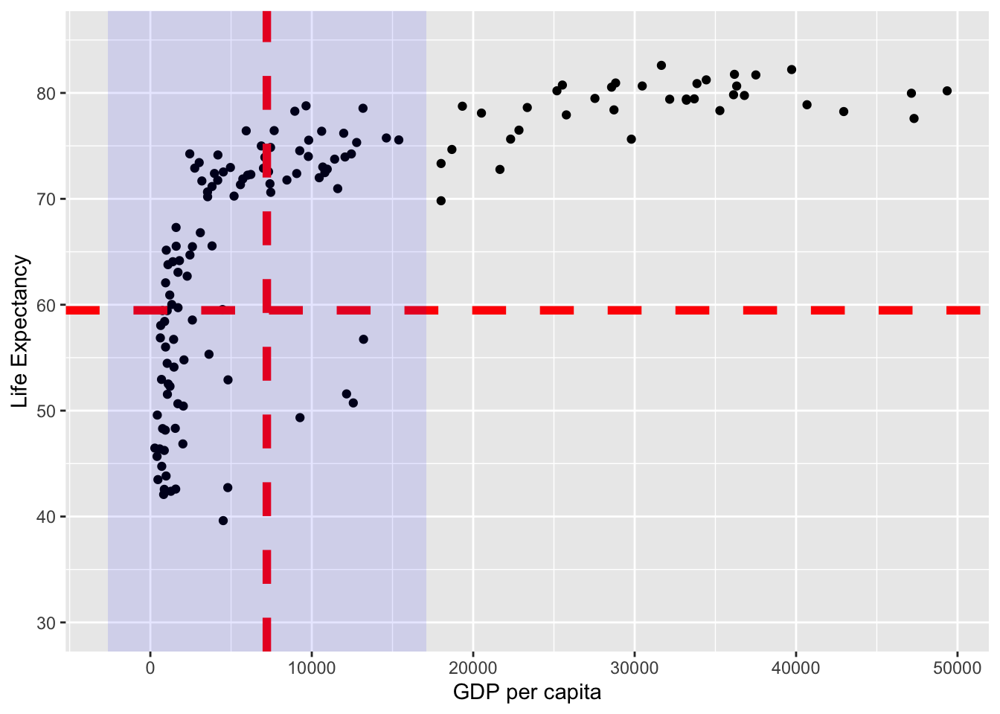
#importing matplotlib library
import matplotlib.pyplot as plt
# load the gapminder module and import the gapminder dataset
from gapminder import gapminder
# create a new data frame that only focuses on data from 2007
gapminder_2007 = gapminder.loc[gapminder['year'] == 2007]
# a reminder of the data frame
gapminder_2007
#scatter plot for the dataset
plt.scatter(gapminder_2007["gdpPercap"], gapminder_2007["lifeExp"])
# add title on the x-axis
plt.xlabel("GDP per capita")
# add title on the y-axis
plt.ylabel("Life Expectancy")
# show the plot
plt.show()
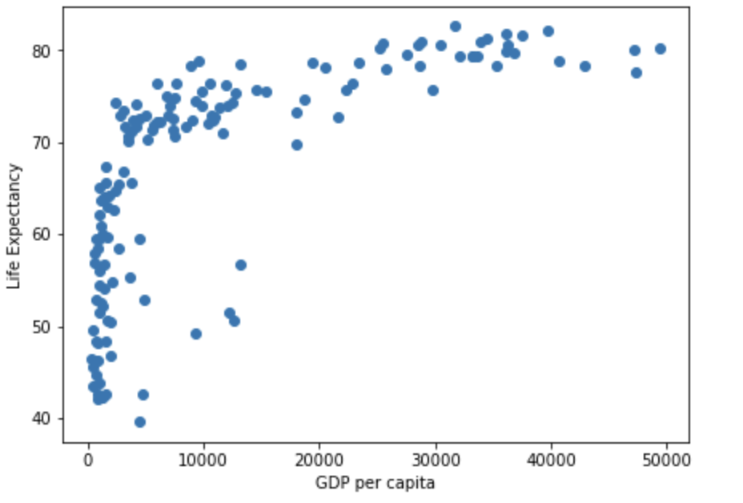
Note that in the figure above each dot represents an individual point from our data. Each dot represents an individual country (with the x-coordinte being the GDP per capita, and the y-coordinate being the Life Expectancy).
Generally speaking, a correlation tells you how much of the total variance is explained by how much the variables vary together. To understand this, lets start by clarifying how you understand the variance of individual variables.
Variance of individual variables
For more insight into variance as a concept, have a look at dispersion, but here we will focus on variance within the context of correlations. You have 2 variables, x (for the x-axis) and y (for the y-axis), and the variance for each of those is:
\[ var_x = \frac{\sum(x_i-\bar{x})^2}{N-1} \]
\[ var_y = \frac{\sum(y_i-\bar{y})^2}{N-1} \]
Just a reminder of what each part of the formula is:
\(\sum\) is saying to add together everything (i.e. the sum of everything within the brackets for this formula)
\(x_i\) refers to each individual’s x-score
\(y_i\) refers to each individual’s y-score
\(\bar{x}\) refers to the mean x-score across all participants
\(\bar{y}\) refers to the mean y-score across all participants
\(N\) refers to the number of participants
\(N-1\) is degrees of freedom, used for this calculation as you are calculating the variance within a sample, rather than variance within the whole population (which you would just use N for; this is explained further in the dispersion section).
The variance for life expectancy can be visualised as the sum of the square of the following:
# Basic scatter plot
life_exp_resid <- ggplot(
data = gapminder_2007,
aes(
x=gdpPercap,
y=lifeExp
)
) +
geom_point() +
geom_hline(
yintercept = mean(gapminder_2007$lifeExp),
linetype = "dashed",
color = "#006599",
linewidth = 1
) +
coord_cartesian(ylim = c(30, 85)) +
xlab("GDP per capita") +
ylab("Life Expectancy") +
geom_segment(
aes(
xend = gdpPercap,
yend = mean(lifeExp),
color = "resid"
)
) +
theme(
legend.position = "none"
)
# ggsave("life_exp_resid.png", life_exp_resid)
life_exp_resid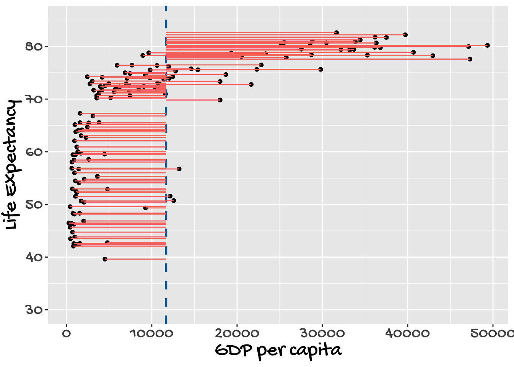
fig, ax = plt.subplots(figsize =(7, 5))
#scatter plot for the dataset
plt.scatter(gapminder_2007["gdpPercap"], gapminder_2007["lifeExp"])
# add horizontal line for the mean of 'lifeExp'
plt.axhline(y=gapminder_2007["lifeExp"].mean(), color='b', ls='--')
# add vertical lines from the individual point to the mean of "lifeExp"
plt.vlines(x=gapminder_2007["gdpPercap"],ymin=gapminder_2007["lifeExp"], ymax=gapminder_2007["lifeExp"].mean(), colors='red', lw=0.5)
# add title on the x-axis
plt.xlabel("GDP per capita")
# add title on the y-axis
plt.ylabel("Life Expectancy")
# show the plot
plt.show()
## save the plot
#plt.savefig('life_exp_resid.png')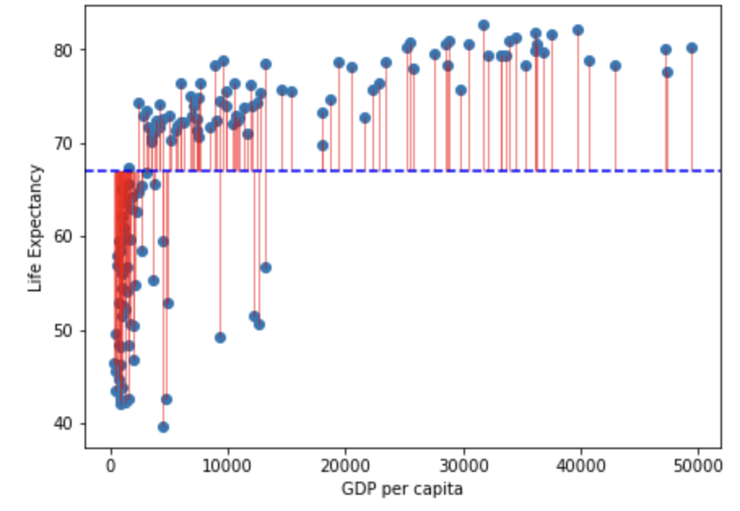
Note that in the figure above the horizontal blue dotted line represent the mean of Life Expectancy. Variance is the total after squaring all the residuals (pink lines) and dividing this total by the degrees of freedom.
Lets look at the variance of GDP per capita:
gdp_resid <- ggplot(
data = gapminder_2007,
aes(
x=gdpPercap,
y=lifeExp
)
) +
geom_point() +
geom_vline(
xintercept = mean(gapminder_2007$gdpPercap),
linetype = "dashed",
color = "#006599",
size = 1
) +
coord_cartesian(ylim = c(30, 85)) +
xlab("GDP per capita") +
ylab("Life Expectancy") +
geom_segment(
aes(
xend = mean(gdpPercap),
yend = lifeExp,
color = "resid"
)
) +
theme(
legend.position = "none"
)Warning: Using `size` aesthetic for lines was deprecated in ggplot2 3.4.0.
ℹ Please use `linewidth` instead.ggsave("gdp_resid.png", gdp_resid)Saving 7 x 5 in imagegdp_resid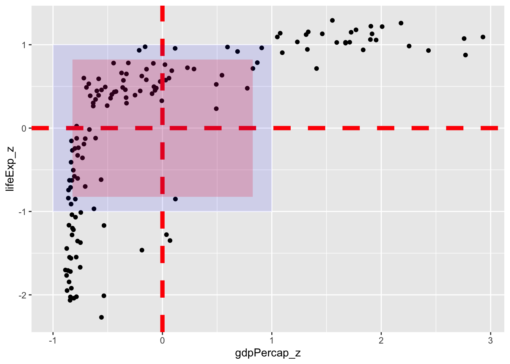
fig, ax = plt.subplots(figsize =(7, 5))
#scatter plot for the dataset
plt.scatter(gapminder_2007["gdpPercap"], gapminder_2007["lifeExp"])
# add vertical line for the mean of "gdpPercap"
plt.axvline(x=gapminder_2007["gdpPercap"].mean(), color='b', ls='--')
# add horizontal lines from the individual point to the mean of "gdpPercap"
plt.hlines(y=gapminder_2007["lifeExp"],xmin=gapminder_2007["gdpPercap"], xmax=gapminder_2007["gdpPercap"].mean(), colors='red', lw=0.5)
# add title on the x-axis
plt.xlabel("GDP per capita")
# add title on the y-axis
plt.ylabel("Life Expectancy")
# show the plot
plt.show()
## save the plot
#plt.savefig('life_exp_resid.png')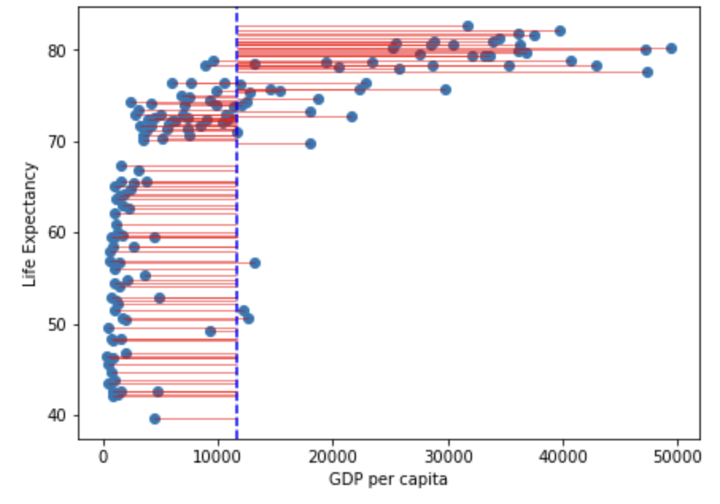
Note that in the figure above the vertical blue dotted line represents the mean gdp per capita. Variance is the total after squaring all the residuals (pink lines) and dividing this total by the degrees of freedom.
Total variance
A correlation captures how much of the total variance is explained by the overlapping variance between the x and y axes. So we first need to capture the total variance. We do this by multiplying the variance for \(x\) by the variance for \(y\) (and square rooting to control for the multiplication itself):
\[ totalVariance = \sqrt{\frac{\sum(x_i-\bar{x})^2}{N-1}}*\sqrt{\frac{\sum(y_i-\bar{y})^2}{N-1}} \]
(Which is the same as:
\[ totalVariance = \frac{\sqrt{\sum(x_i-\bar{x})^2*\sum(y_i-\bar{y})^2}}{N-1} \]
)
Or, to use the figures above:
| $Total$ $Var$ = | sqrt(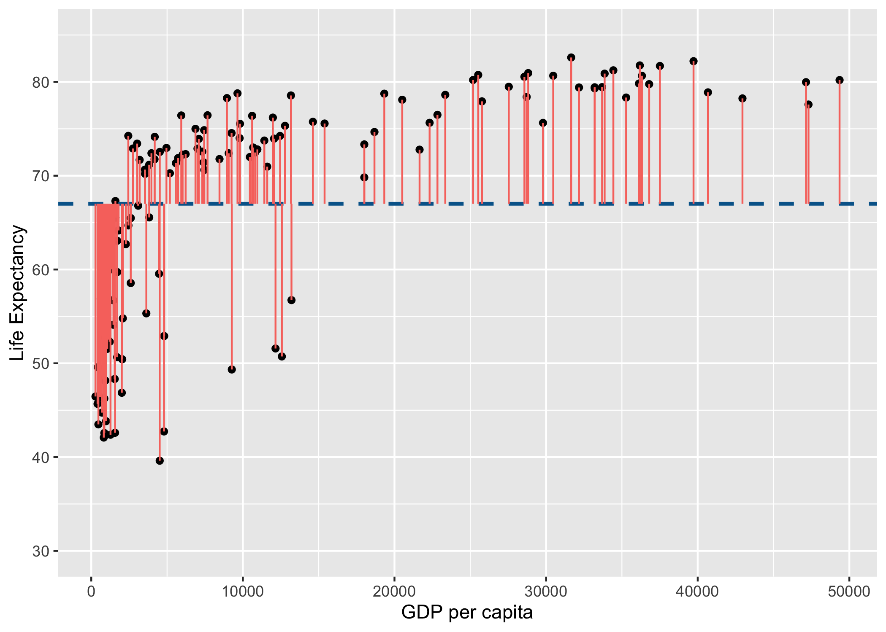 \^2) $$ \frac{}{N-1} $$ | $*$ | sqrt(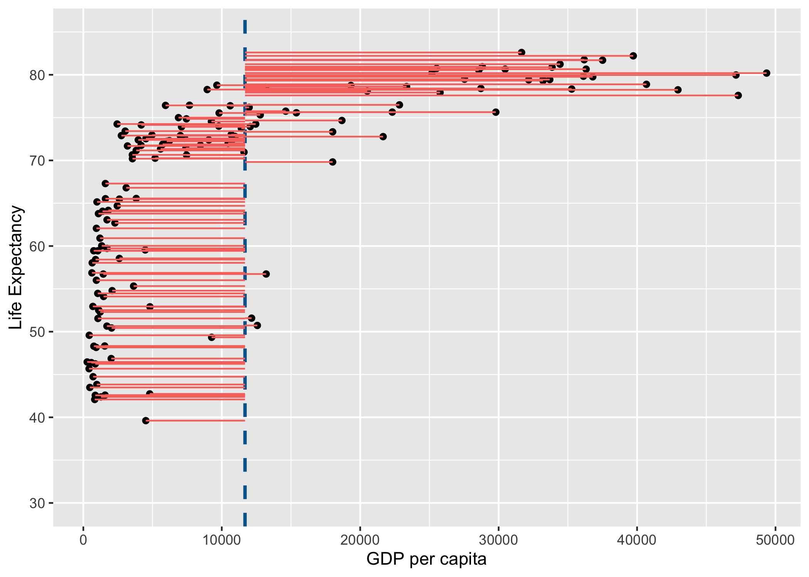 \^ 2) $$ \frac{}{N-1} $$ |
This is analogous to understanding the total area of a rectangle by multiplying the length of each side with each other.
Spearman’s Rank (AKA Spearman’s Rho)
Spearman’s Rank correlation is identical to a Pearson correlation (described above), but adds a step of converting all the data into ranks before conducting any analyses. This is useful because ranks are not vulnerable to outlier (i.e. unusually extreme) data points. Let’s now turn the gapminder data we’ve been working with above into ranks and then run a Pearson’s correlation on it to confirm this:
gapminder_2007$gdpPercap_rank <- rank(gapminder_2007$gdpPercap)
gapminder_2007$lifeExp_rank <- rank(gapminder_2007$lifeExp)gapminder_2007["gdpPercap_rank"] = gapminder_2007["gdpPercap"].rank()
gapminder_2007["lifeExp_rank"] = gapminder_2007["lifeExp"].rank()Lets do a quick check to see that ranking the data addresses the problems with skewness and kurtosis:
spssSkewKurtosis(gapminder_2007$gdpPercap_rank) estimate se zScore
skew 0.0 0.2034292 0.000000
kurtosis -1.2 0.4041614 -2.969111spssSkewKurtosis(gapminder_2007$lifeExp_rank) estimate se zScore
skew 0.0 0.2034292 0.000000
kurtosis -1.2 0.4041614 -2.969111spssSkewKurtosis(gapminder_2007["gdpPercap_rank"])
spssSkewKurtosis(gapminder_2007["lifeExp_rank"])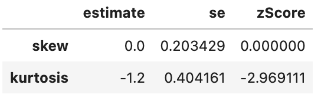
This has successfully removed any issue with skewness of the data, but has made the data more platykurtic (i.e. flatter). A problem with platykurtic data is that parametric tests might be over sensitive to identifying significant effects (see kurtosis), i.e. be at a higher risk of false positives. This is evidence that using a Spearman’s Rank may increase a risk of a false-positive (at least with this data), so another transformation of the data may be more appropriate to avoid this problem with kurtosis.
For now, lets focus on how much of the variance in ranks is explained in the overlap in variance of \(gdp\) and \(life\) \(expectancy\) ranks:
# Pearson correlation on **ranked** data:
cor.test(gapminder_2007$gdpPercap_rank, gapminder_2007$lifeExp_rank, method = "pearson")
Pearson's product-moment correlation
data: gapminder_2007$gdpPercap_rank and gapminder_2007$lifeExp_rank
t = 19.642, df = 140, p-value < 2.2e-16
alternative hypothesis: true correlation is not equal to 0
95 percent confidence interval:
0.8055253 0.8950257
sample estimates:
cor
0.8565899 # Spearman correlation applied to original data (letting R do the ranking)
cor.test(gapminder_2007$gdpPercap, gapminder_2007$lifeExp, method = "spearman")
Spearman's rank correlation rho
data: gapminder_2007$gdpPercap and gapminder_2007$lifeExp
S = 68434, p-value < 2.2e-16
alternative hypothesis: true rho is not equal to 0
sample estimates:
rho
0.8565899 # Pearson correlation on **ranked** data:
scipy.stats.pearsonr(gapminder_2007["gdpPercap_rank"], gapminder_2007["lifeExp_rank"])
# Spearman correlation applied to original data (letting R do the ranking)
scipy.stats.spearmanr(gapminder_2007["gdpPercap"], gapminder_2007["lifeExp"])(0.8565899189213543, 4.6229745362984015e-42)
SpearmanrResult(correlation=0.8565899189213544, pvalue=4.62297453629821e-42)The \(r\) value is now .857, suggesting that the overlap between \(gdp\) and \(life\) \(expectancy\) explains 85.7% of the total variance of the ranks for both of them.
Lets visualise this using similar principles above on the ranks of \(gdp\) and \(life\) \(expectancy\):
rank_resid <- ggplot(
data = gapminder_2007,
aes(
x=gdpPercap_rank,
y=lifeExp_rank
)
) +
geom_point() +
geom_vline(
xintercept = mean(gapminder_2007$gdpPercap_rank),
linetype = "dashed",
color = "#006599",
size = 1
) +
#coord_cartesian(ylim = c(30, 85)) +
xlab("GDP per capita (RANK)") +
ylab("Life Expectancy (RANK)") +
geom_segment(
aes(
xend = mean(gdpPercap_rank),
yend = lifeExp_rank,
color = "GDP residuals"
)
) +
geom_segment(
aes(
xend = gdpPercap_rank,
yend = mean(lifeExp_rank),
color = "Life Expectancy Residuals"
)
) +
geom_hline(
yintercept = mean(gapminder_2007$lifeExp_rank),
linetype = "dashed",
color = "#006599",
size = 1
)
rank_resid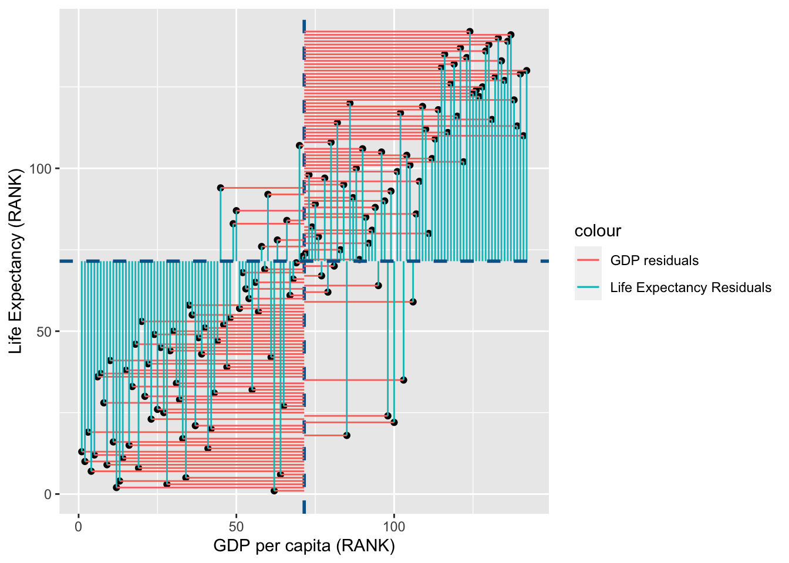
import matplotlib.patches as mpatches
import matplotlib.pyplot as plt
fig, ax = plt.subplots(figsize =(7, 5))
#scatter plot for the dataset
plt.scatter(gapminder_2007["gdpPercap_rank"], gapminder_2007["lifeExp_rank"])
# add vertical line for the mean of "gdpPercap"
plt.axvline(x=gapminder_2007["gdpPercap_rank"].mean(), color='b', ls='--')
# add horizontal lines from the individual point to the mean of "gdpPercap"
plt.hlines(y=gapminder_2007["lifeExp_rank"],xmin=gapminder_2007["gdpPercap_rank"], xmax=gapminder_2007["gdpPercap_rank"].mean(), colors='red', lw=0.5)
# add horizontal line for the mean of "lifeExp"
plt.axhline(y=gapminder_2007["lifeExp_rank"].mean(), color='b', ls='--')
# add vertical lines from the individual point to the mean of "lifeExp"
plt.vlines(x=gapminder_2007["gdpPercap_rank"],ymin=gapminder_2007["lifeExp_rank"], ymax=gapminder_2007["lifeExp_rank"].mean(), colors='green', lw=0.5)
# add title on the x-axis
plt.xlabel("GDP per capita (RANK)")
# add title on the y-axis
plt.ylabel("Life Expectancy (RANK)")
red_patch = mpatches.Patch(color='red', label='GDP Residuals')
green_patch = mpatches.Patch(color='green', label='Life Expectancy Residuals')
plt.legend(handles=[red_patch, green_patch],bbox_to_anchor=(1.05, 1), loc=2, borderaxespad=0.)
# show the plot
plt.show()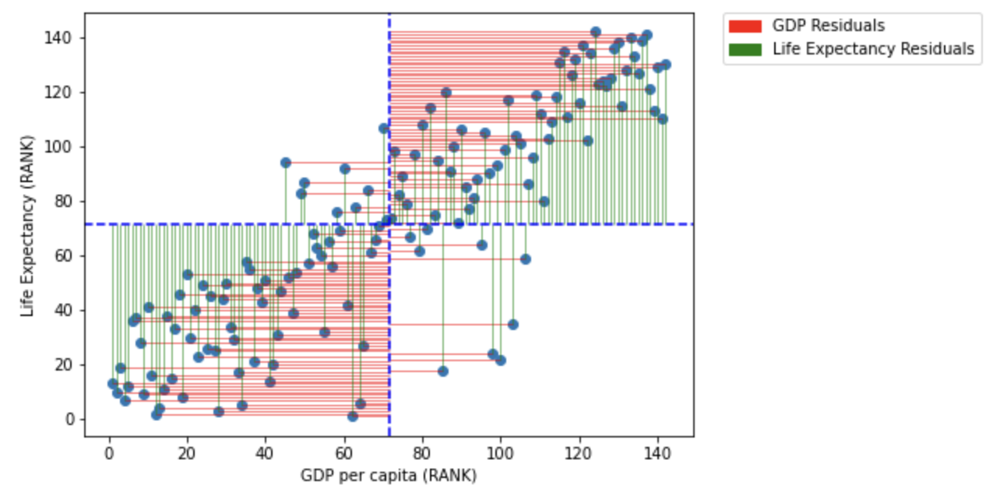
You may notice that the variance from the mean in X and Y is more aligned in this figure than it was in the data before it was transformed into ranks (and is less skewed!):
shared_resid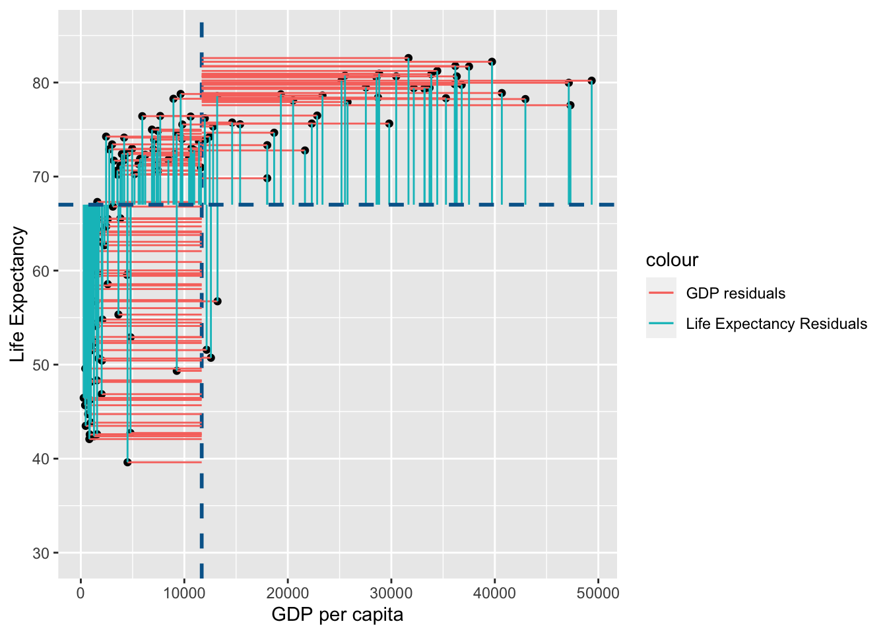
R values are standardised values
As both Pearson’s R and Spearman’s Rank are calculations of the proportion of total variance that can be explained by covariance between variabels, they will always be a value between -1 (all variance is explained for a negative association) to 1 (all variance is explained for a positive association). R values are thus standardised, unlike variance and covariance values which have no limit in their values.
Consolidation questions
Question 1
Which test would be less influenced by skewed data?
Question 2
Can r values be greater than 1?